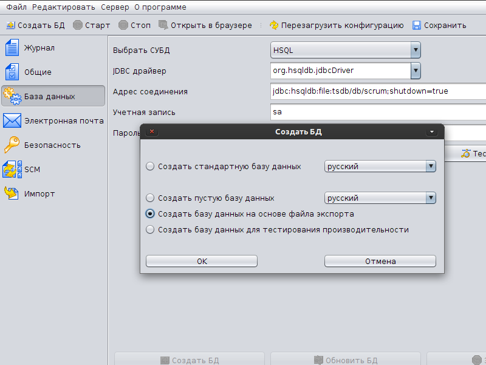

|
<< Click to Display Table of Contents >> Navigation: Rus > Примеры конфигураций для TrackStudio 4.0 > БД TrackStudio для управления проектами по SCRUM |
Данная конфигурация TrackStudio предназначена для организации процесса разработки программного обеспечения по методологии Scrum.
Мы выпускаем TrackStudio Enterprise в двух вариантах: Standalone — для рабочих станций под управлением Microsoft Windows и WAR— для серверов.
Вариант Standalone поставляется с утилитой для настройки и запуска TrackStudio Server Manager. В комплект также входит сервер приложений jetty, почтовый сервер jes и СУБД Hypersonic SQL. Данный вариант работает «из коробки», то есть вы можете после установки сразу же запустить TrackStudio без настройки, чтобы ознакомиться с системой.
Также Server Manager понадобится вам для экспорта и импорта данных из базы.
На этапе ознакомления с продуктом мы рекомендуем использовать вариант Standalone.
Вариант WAR предназначен для запуска под имеющимся у вас сервером приложений (обычно это Tomcat). Он содержит не скомпилированные JSP, которые Tomcat собирает сам. Этот вариант настраивается путем редактирования файлов properties. Вы также можете перенести предварительно настроенные в Server Manager файлы properties с другой машины.
Ниже описана процедура установки TrackStudio Standalone. Об установке и настройке TrackStudio WAR вы можете прочитать в документации к системе на сайте.
1.Запустите TrackStudio Enterprise Server Manager (sman.exe для Windows, sman для GNU/Linux)
2.Выберите «Русский» в меню File > Language, если отображаются надписи на английском языке
3.В меню нажмите кнопку «Создать БД»
4.В появившемся окне выберите «Создать базу данных на основе файла экспорта»

5.Нажмите кнопку «ОК»
6.Выберите файл базы данных scrum-db.zip
7.После того, как база данных будет создана, нажмите кнопку «ОК» в верхней панели
8.Распакуйте архив scrum-scripts.zip в папку etc/plugins вашего экземпляра TrackStudio с сохранением структуры каталогов (Внутри архива есть папки scripts и email. Они должны объединиться с такими же папками вашего экземпляра TrackStudio).
9.Нажмите кнопку «Старт», чтобы запустить сервер TrackStudio
10.Когда сервер запустится, нажмите кнопку «Открыть в браузере»
11.Зайдите в систему как root с паролем «root». Смените пароль и почтовый адрес этому пользователю
В соответствие с методологией Scrum, в системе определены три роли: Product Owner (Заказчик), Scrum Master (Мастер) и Team (Команда).
Роль |
Логин |
Пароль |
Product Owner |
manager |
root |
Scrum Master |
master |
root |
Team Member |
user, user4, user5, user6 |
root |
У каждого продукта (проекта) в Scrum должен быть один и только один Заказчик. Его задача — регистрировать в системе истории и определять их важность для продукта. Заказчик взаимодействует с командой (Team) для наиболее полного понимания командой целей Заказчика, и Заказчиком — возможностей команды. Результатом этого взаимодействия должны стать четко сформулированные и ранжированные по важности истории, которые Заказчик и команда понимают одинаково.
Мастер играет основную роль в планировании спринта, определяет его бюджет и распределяет истории по команде.
Каждый участник команды разработки при планировании оценивает те задачи, в которых разбирается, указывая бюджет задачи в часах. По завершении планирования каждый участник занимается только своими задачами.
В системе определены проекты, истории, спринты и задачи. Проектами ведает Заказчик. Он же пишет истории. Спринты создает Мастер, он же заполняет их историями. Задачи могут создавать участники команды внутри спринтов и внутри историй.
Войдите в TrackStudio Администратором (root) и создайте проект для Заказчика. После этого выберите в меню пункт «Правила доступа» и добавьте в проект нужных пользователей. Укажите их роли в этом проекте.
Для того, чтобы Мастер мог управлять участниками команды, нужно дать ему доступ на пользователя scrum_team в «Управлении пользователями»
Заказчик создает истории, максимально полно и четко описывая их. При этом обязательно заполняются поля «Как продемонстрировать» и «Важность». В поле «Важность» должно быть любое целое число, чем оно больше, тем выше важность.
Затем команда просматривает созданные Заказчиком задачи и оценивает их трудоемкость, указывая бюджет. При этом участники команды видят оценки друг друга и могут на них ориентироваться, либо не видят и надеются только на себя. (эта функциональность управляется настройкой в scrum.properties)
Система подсказывает, какие задачи уже оценены этим участником, а какие еще нет.
На этом этапе нет смысла создавать задачи внутри историй, так как разные исполнители могут по-разному видеть реализацию функциональности, описанной в истории. В отличие от традиционной методологии Scrum, Заказчик не определяет трудоемкость реализации истории, но видит оценки трудоемкости и может участвовать в их обсуждении.
Мастер создает спринт, в котором Заказчик в обсуждении с Мастером и командой указывает сроки (deadline). К указанному сроку спринт должен быть готов для демонстрации. Исходя из сроков и производительности команды Мастер указывает бюджет спринта. При этом он ориентируется на показатель «Можно запланировать» таблицы «Планирование» в спринте. Бюджет спринта должен быть меньше, чем эта оценка.
После того, как все или почти все участники оценили истории, Мастер начинает заполнять спринт, перенося в него наиболее важные для Заказчика задачи. Бюджет историй на этом этапе не утвержден, это все еще предмет обсуждения. Перенеся истории в спринт, Мастер видит первую оценку бюджета спринта и сравнивает ее с заданной. На этом этапе уже можно представить какие истории войдут в спринт, а какие — нет.
Затем Мастер начинает распределять истории по исполнителям и утверждать бюджеты задач.
При этом он может руководствоваться как оценками участников команды, выбирая в качестве ответственного того, кто указал меньшее время, так и таблицей загруженности команды. Бюджет при этом Мастер может указать, исходя из своих оценок.
Иногда пользователь, входящий в команду, работает не только над проектом этого Заказчика, но и над другими проектами. Кроме того, в некоторых командах разные пользователи работают разное количество времени (не все сидят на работе с 9 до 18). Чтобы учитывать это, для каждого пользователя есть дополнительное поле «Степень занятости». В нем указывается количество рабочих часов для пользователя в неделю. Тех рабочих часов, когда работают, а не присутствуют на работе — это важно для планирования спринтов.
После распределения задач спринта может оказаться, что на ком-то из участников «висит» больше задач, чем он сможет выполнить. В таком случае нужно либо пересмотреть бюджеты историй этого участника, либо переназначить часть задач на другого участника, либо провести декомпозицию самых крупных задач и распределить их по команде.
Так же, разумеется, может оказаться, что бюджет при планировании превышен. В таком случае следует либо увеличить бюджет спринта (если позволяет запас по времени), либо изменить оценки части историй, либо убрать из спринта часть наименее значимых историй.
По окончанию планирования спринта Мастер запускает спринт в работу и команда может приступать к своим задачам.
Мастер может следить за ходом выполнения спринта и своевременно реагировать на отставание от плана.
Если на историю было потрачено времени больше планируемого, это время будет отмечено красным цветом. Когда участник команды выполнит все свои задачи, Мастер может переназначить на него задачи других участников, которые отстают от графика.
После того, как все истории в спринте будут реализованы, Мастер сможет закрыть спринт и приступить к демонстрации результатов Заказчику.